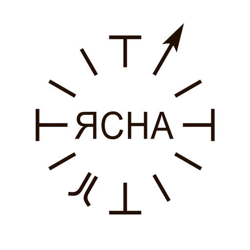
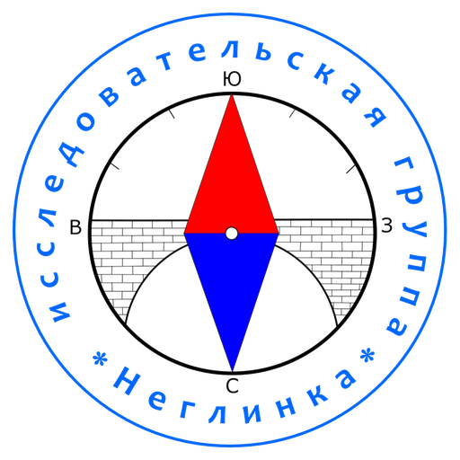
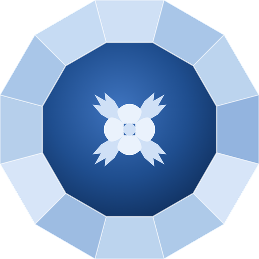
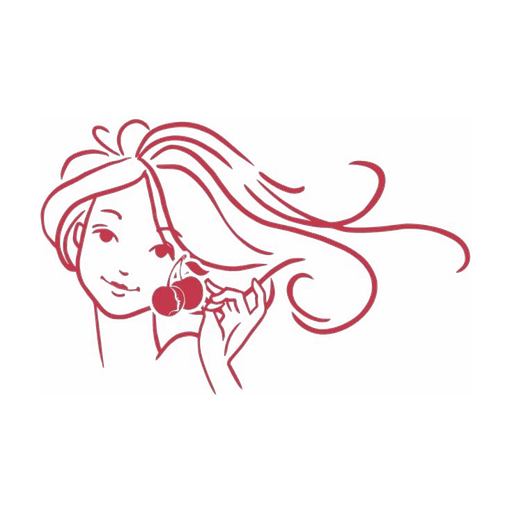
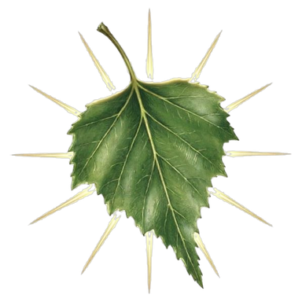

Войти в направление
Работать в команде управления — вместе разбирать, ходить, исследовать. Девять направлений, от истории и архитектуры до языка и здоровья.
Выбрать направление →
Горящие сердцем соратники!
Горящие сердцем товарищи!
Горящие сердцем друзья и подруги!
Вера наших дедов и прадедов захватывает всё больше сердец и душ. Учение Ясна — это наше родное национальное учение, дошедшее до нас из глубины веков. Мы долгое время жили чужой жизнью, чужими мыслями, чужим отношением к человеку, обществу, природе и мирозданию.
Пришло время возвращения Ясны в нашу жизнь.
Ясна — это наш самостоятельный путь веры, и это наш самостоятельный путь знания. Ясна ждёт нас. Двери Ясны открыты для всех.
С древности мы всегда были грамотными и мужчины и женщины, и взрослые и дети. Мы грамотны были своею собственной грамотой — Ясной.
Наша задача принять помощь Ясны в нашей жизни, в нашем труде, в нашем здоровье, в наших мечтах и стремлениях.
Наша Ясна — это наша правда. Она не нуждается в чужих правках, в чужом участии и в чужих оценках.
Мы с этой Вечной Книгой сами пойдём к свету, к ладу и любви.
От архитектуры и истории до языка и здоровья. Каждое направление ведёт свой руководитель. Выберите то, что откликается — или приходите на День Ясны и познакомьтесь со всеми за один день.

Русская Школа Русского Языка. Рассказываем о русском учении, мировоззрении и русской семье. Уроки РШРЯ, курсы, статьи.
Рук. · С. Ю. Архипов
Проясняем историю и географию России — гуляем по Москве, читаем то, что зашифровано в улицах.
Рук. · Антон Черномашенцев
Читаем язык предков в камне — усадьбы, крепости, монастыри и храмовые комплексы. Русский классицизм и деревянное зодчество.
Рук. · Александр АкимовЛитература как способ думать и чувствовать. Возвращаем людей к чтению — клубы, аудио-лекторий, разборы классики.
Рук. · Анастасия СкибаУтерянные смыслы русских слов. Этимология как практика — возвращаем словам их настоящее значение.
Рук. · Александр Иванов
Здоровье и тело в русской традиции. Дыхание, движение, голос, уклад — практики возвращения к себе.
Рук. · Екатерина Белова
Красота, лад и любовь как уклад жизни. Эстетика русской традиции — от образа до отношений между людьми.
Рук. · Вишня СтефароваТеоретическое ядро Ясны: изучаем построение раскладок — «разложи всё и соедини всё». От медицины до истории.
Рук. · Тимур Фахрутдинов
Родовые знаки, гербы и символика. Читаем язык образов — что и зачем зашифровано в гербах городов и родов.
Рук. · Алексей ГрачёвЯсну исследуют по-разному. Выбирать один путь необязательно — их можно совмещать и менять.
Работать в команде управления — вместе разбирать, ходить, исследовать. Девять направлений, от истории и архитектуры до языка и здоровья.
Выбрать направление →У вас есть своя разработка или проект? Принесите — управление посмотрит. Если этого ещё не было, работа выйдет под вашим именем: авторство остаётся за вами.
Рассказать о проекте →Групповые занятия и разборы — или индивидуально, если хочется в своём темпе. Начать можно без всякой подготовки.
Задать вопрос →Общие праздники, творческие вечера, живое общение. Без обязательств и без спроса — приходите и смотрите.
Ближайший сбор →Тут встречаются, исследуют и внедряют наработки в свою жизнь.
В Москве, Петербурге, онлайн или вместе.
Прогулка, беседа, мастерская, лаборатория, совместное чтение.
Кто пришёл раньше — помогает.
День Ясны — общий сбор. Между сборами — праздники и поездки.
Не иерархия — взаимная ответственность. На этой конструкции держится и семья, и страна. Один из примеров того, как мы разбираем привычные вещи на занятиях.
Русская Ясна — открытое сообщество исследователей. У нас нет иерархии или обязательных взносов. Вы подписываетесь на каналы направлений, участвуете в обсуждениях и встречах в удобном ритме. Можете прийти на открытую встречу, посмотреть материалы и решить, подходит ли вам формат. Все публикации доступны бесплатно.
Подписка на каналы и участие в открытых встречах — бесплатно. Натурные уроки (прогулки, экскурсии) могут быть платными — обычно 500–2000 ₽, спецкурсы из нескольких встреч — от 3000 ₽. Точные цены указаны в анонсах каждого мероприятия.
Никаких формальных. Русская Ясна — образовательное сообщество без иерархии, взносов или обязательных ритуалов. Вы свободно приходите и уходите, выбираете формат участия. Опираемся на факты и совместные исследования, а не на веру или догматы.
Подпишитесь на Telegram-канал направления, которое вам откликается. Почитайте материалы. Приходите на ближайшую открытую встречу. Или оставьте заявку — координатор свяжется и подскажет, что подойдёт лучше всего.
Да! Полностью онлайн работают Извод, Геральдика и Ясна-Школа; ЛитПроСвет, Джива и Парад Красоты совмещают московские встречи с онлайном. Натурные уроки Неглинки и Граники проходят в Москве, встречи Александрии — в Санкт-Петербурге, а материалы доступны удалённо.
Минимум — 1 час в неделю: чтение материалов и участие в одном обсуждении. Максимум не ограничен. Вы выбираете сами, какие встречи посещать и в каком объёме участвовать.
Конечно. Многие участники совмещают 2–3 направления. Они пересекаются: например, Неглинка связана с Граникой (история города + архитектура), а Извод — с ЛитПроСветом (язык + литература).
Мы не читаем лекции — мы вместе исследуем. Каждый участник проверяет первоисточники, задаёт вопросы, делится находками. Это совместная работа, а не потребление контента.